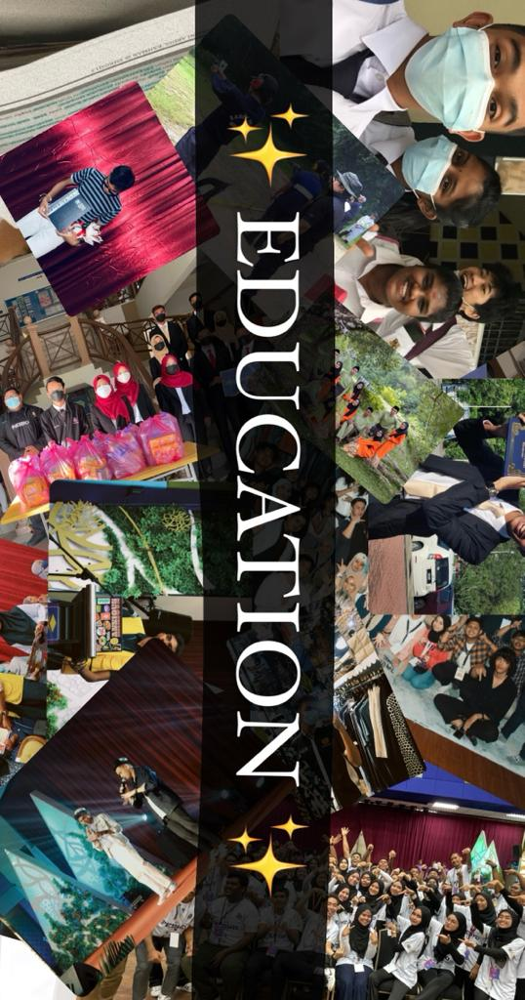
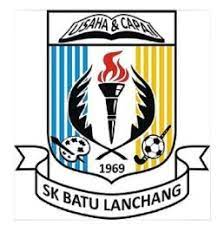
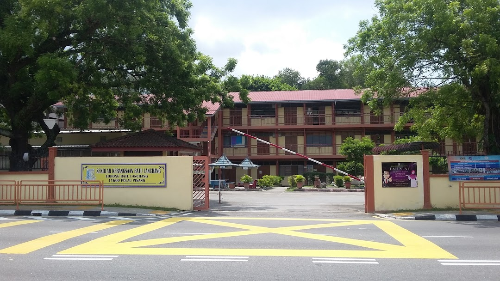
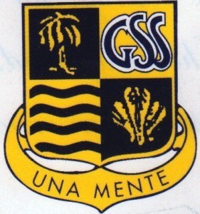
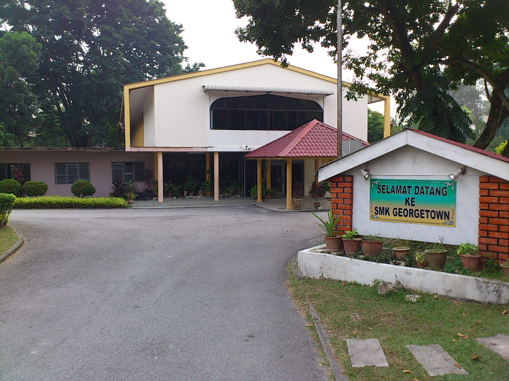

EDUCATION



Primary school
SEKOLAH KEBANGSAAN BATU LANCHANG


This is my primary school named Sekolah Kebangsaan Batu Lanchang or as known as SKBL. This is the place where i started my journey as a student. There are a lot of good memories during my primary school.
Secondary school
SEKOLAH MENENGAH KEBANGSAAN GEORGETOWN

Next this is my secondary school named Sekolah Menengah Kebangsaan Georgetown or as known as SMKG. There are a lot of love-hate memories that i have dealed in this school. I learn and experience a lot of things when i'm in this school but i'm super duper grateful because it teaches me something so that i can be aware in the future.
Diploma
UNIVERSITI TEKNOLOGI MARA

This is the best place for me been through a diploma life, i learned how to handle an event, deal with people, create networking from other instituitions, gain knowledge, learn on how to apply everything that i have kearned into my future soon.